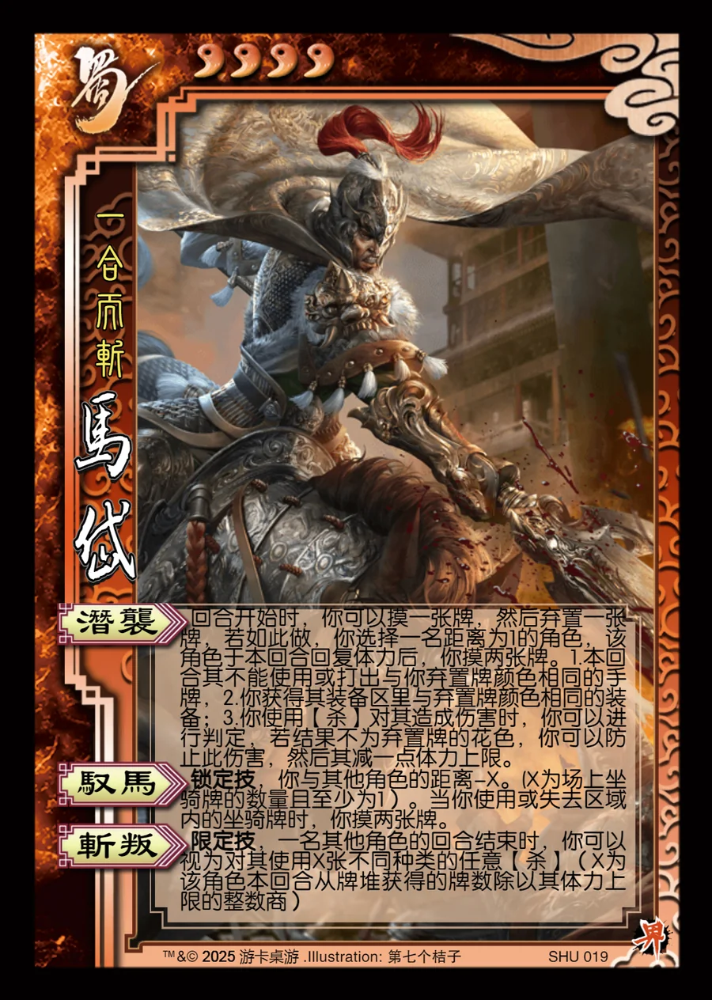

点击卡面查看大图
蜀
马岱
♥4一合而斩
潜袭
回合开始时，你可以摸一张牌，然后弃置一张牌，若如此做，你选择一名距离为1的角色，该角色于本回合回复体力后，你摸两张牌。1.本回合其不能使用或打出与你弃置牌颜色相同的手牌，2.你获得其装备区里与弃置牌颜色相同的装备；3.你使用【杀】对其造成伤害时，你可以进行判定，若结果不为弃置牌的花色，你可以防止此伤害，然后其减一点体力上限。
驭马锁定技
锁定技，你与其他角色的距离-X。(X为场上坐骑牌的数量且至少为1）。当你使用或失去区域内的坐骑牌时，你摸两张牌。
斩叛限定技
限定技，一名其他角色的回合结束时，你可以视为对其使用X张不同种类的任意【杀】（X为该角色本回合从牌堆获得的牌数除以其体力上限的整数商）